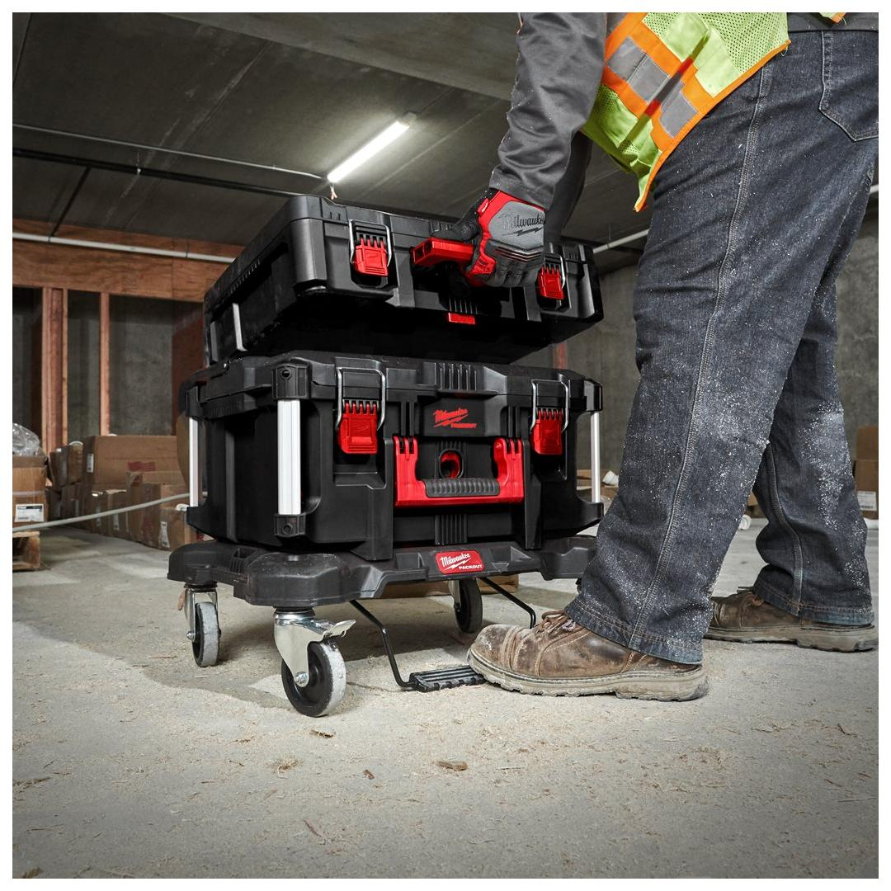
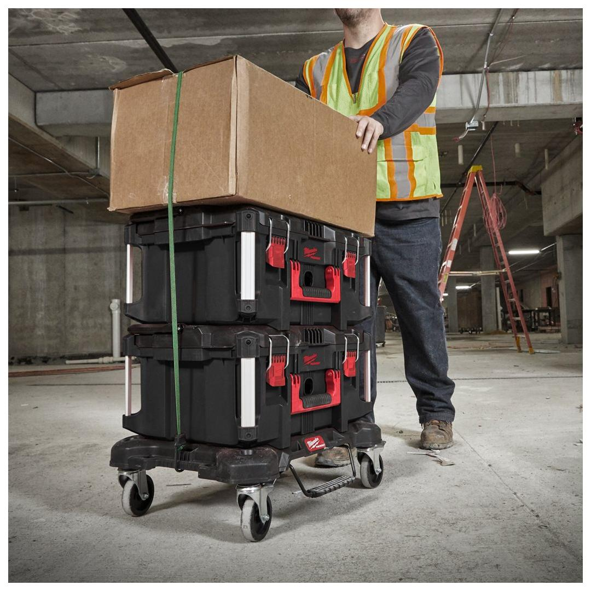
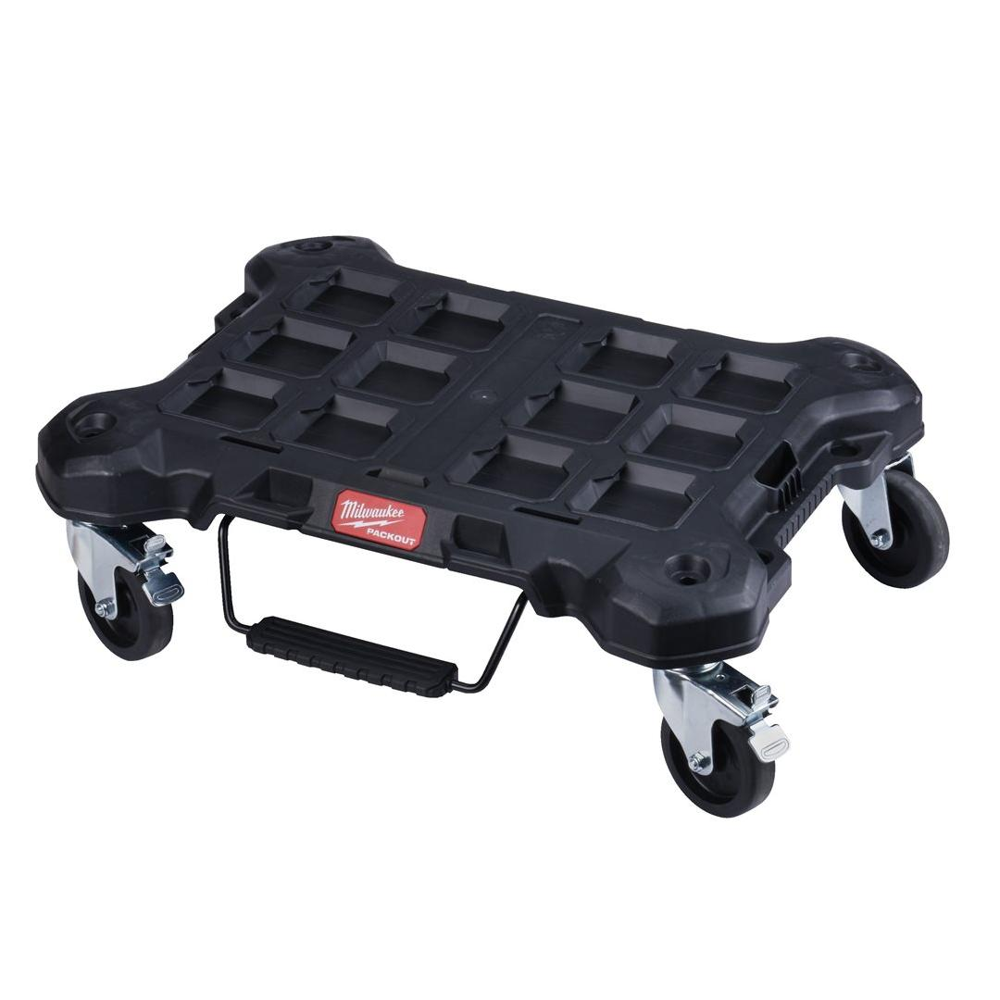
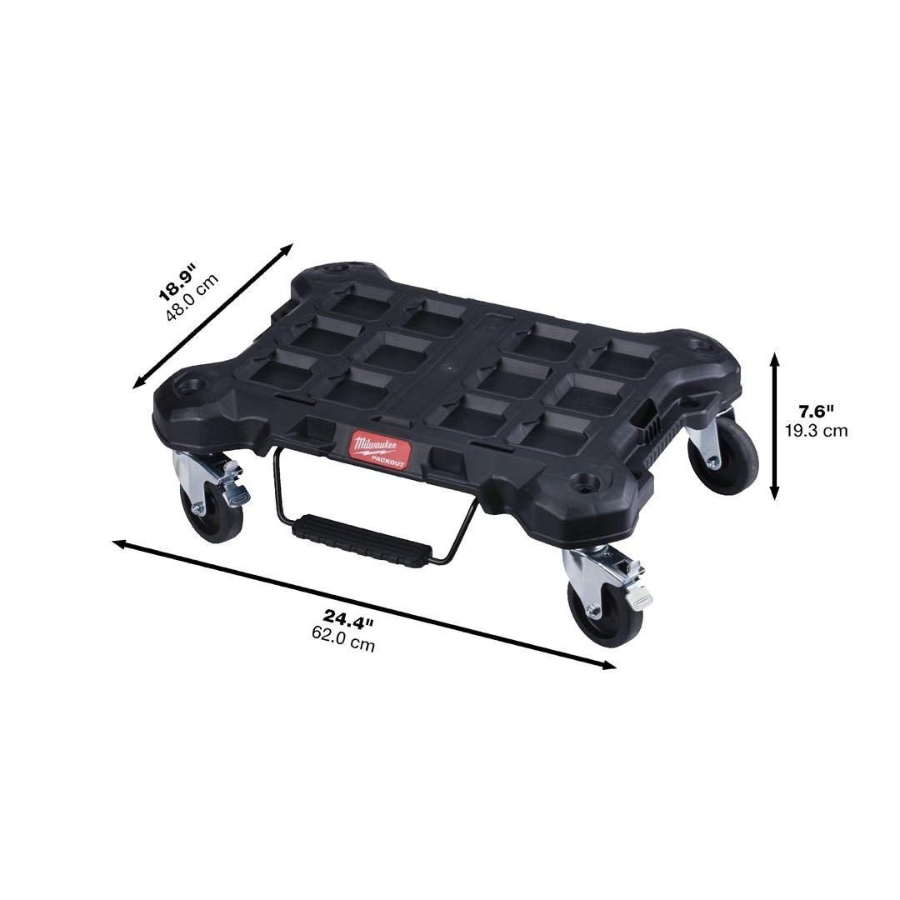

Milwaukee | Packout Flat Trolley
4932471068





Features
- 113kg weight capacity.
- Durable casters to easily roll with heavy load on a jobsite.
- Includes 1 locking brake and 2 side locks to stop the trolley and easily connect the PACKOUT™ boxes and bags.
- Part of the PACKOUT™ modular storage system.
Information
| Dimensions (mm) | 193 x 620 x 480 |
| Pack quantity | 1 |